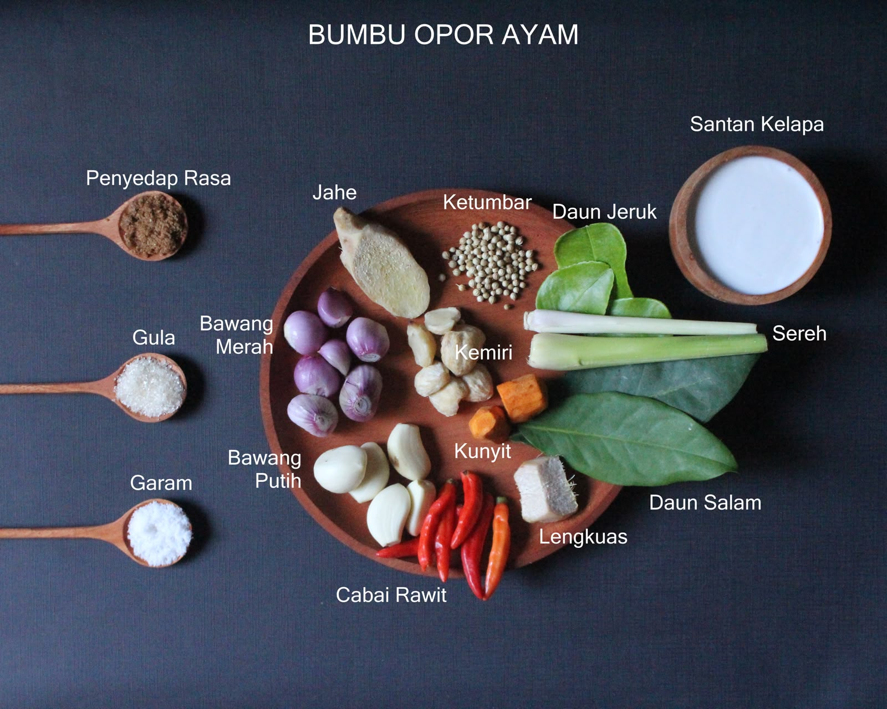
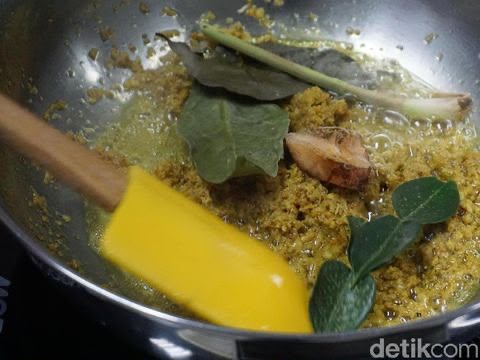

Opor Ayam Kampung Gurih Spesial Lebaran
Hidangan klasik nusantara dengan kuah santan bumbu kuning yang kaya rempah, gurih meresap hingga ke serat daging.
Bahan & Bumbu
Bahan Utama
Bumbu Halus
Langkah Pembuatan
- Persiapan Ayam: Cuci bersih potongan ayam kampung. Lumuri dengan sedikit air perasan jeruk nipis dan garam, diamkan 15 menit lalu bilas kembali.
- Menumis Bumbu: Panaskan sedikit minyak. Tumis bumbu halus bersama serai, daun salam, daun jeruk, dan lengkuas hingga harum dan matang.
- Memasak Daging: Masukkan potongan ayam, aduk rata hingga warna ayam berubah pucat dan bumbu meresap.
- Ungkep dengan Santan Encer: Tuangkan santan encer. Masak dengan api sedang hingga daging ayam empuk dan kuah menyusut.
- Penyelesaian: Tuangkan santan kental. Aduk perlahan secara terus menerus agar santan tidak pecah. Bumbui dengan garam dan gula. Masak hingga mendidih dan matang sempurna.
Tips Rahasia Koki:
Gunakan api kecil saat menyiramkan santan kental dan aduk secara berkala agar santan tidak pecah. Taburi dengan bawang goreng melimpah saat disajikan bersama ketupat!
Galeri Foto Opor Ayam
Dokumentasi visual dari bahan baku, proses memasak, hingga hasil akhir penyajian.

1. Bumbu & Rempah Pilihan
Rempah segar berkualitas tinggi

2. Proses Menumis
Menumis bumbu hingga harum
3. Hidangan Siap Disajikan
Disajikan hangat dengan bawang goreng
Video Tutorial Memasak
Tonton panduan langkah demi langkah dalam bentuk video agar hasil masakan sempurna.